Navegando Pelo Terminal (macOS)
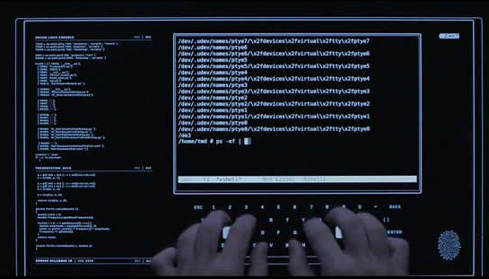
Você já deve ter visto em algum filme uma cena como a mostrada acima: um "hacker" digita comandos freneticamente em uma interface onde só aparecem comandos de texto ininteligíveis até que magicamente ele obtém os dados que todos julgavam ser impossível obter. Interfaces de linha de comando podem assustar um pouco no começo, mas veremos que sabendo apenas 2 comandos já é possível utilizá-las para navegar pelos arquivos do computador.
Talvez você nunca tenha aberto o terminal/console/prompt do seu computador, mas ele está (e sempre esteve) lá! Vamos começar abrindo o terminal no nosso computador.
Abrindo o Terminal
Atenção
A partir deste ponto existem algumas diferenças entre os sistemas operacionais. Este handout foi desenvolvido para usuários Mac OS X. Se você usa Windows, consulte o outro handout disponibilizado.
Temos duas opções:
- Abra a pasta Applications, depois abra a pasta Utilities dentro dela e então dê um duplo clique em Terminal;
- Pressione
command+espaçopara lançar o Spotlight Search, digite Terminal e apertereturn.
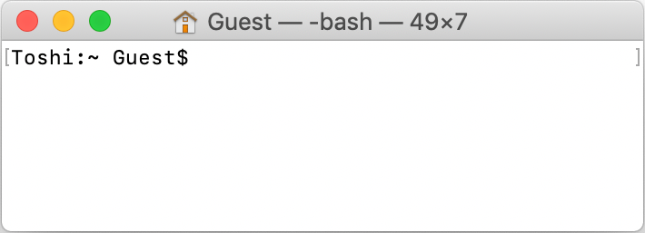
Não vamos entrar em detalhes por enquanto, mas tudo o que aparece antes do $ são informações como: o nome do seu usuário, em que pasta você está atualmente. Por enquanto você só precisa saber que os comandos são digitados depois do $.
O comando ls
Vamos começar pelo comando ls. Digite ls e aperte a tecla return:
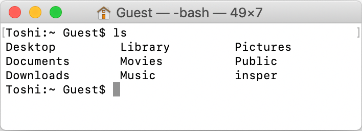ls" width="50%" />
O comando ls lista os arquivos e pastas presentes na pasta atual. Funciona mais ou menos assim: imagine que você é um personagem de um jogo em uma sala (a pasta atual) com diversas informações (arquivos) e algumas portas (outras pastas). Todos os comandos que você executar serão executados na pasta atual. Por enquanto, vamos considerar duas possibilidades de ação:
- Visualizar os arquivos disponíveis da pasta atual;
- Navegar para outra pasta.
O comando ls realiza a primeira opção. Se você não mudou nenhuma configuração do terminal você sempre começa na pasta do seu usuário (também conhecida como sua home e é abreviada pelo símbolo "~" no terminal). Para verificar que o comando listou os arquivos e pastas disponíveis, vamos abrir o Finder na mesma pasta:
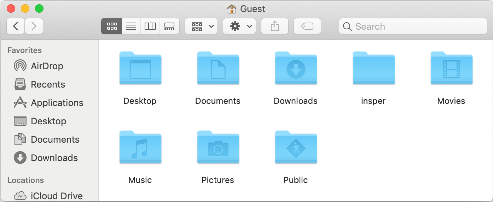
O comando cd
Agora vamos tentar a segunda opção: navegar para outra pasta. Para isso usamos o comando cd. Ele deve ser seguido do nome da pasta. Vamos entrar na pasta insper listada acima. Para isso vamos usar o comando cd insper.
Atenção
Os arquivos no seu computador provavelmente serão diferentes dos arquivos deste exemplo.
Os comandos executados anteriormente não são apagados.
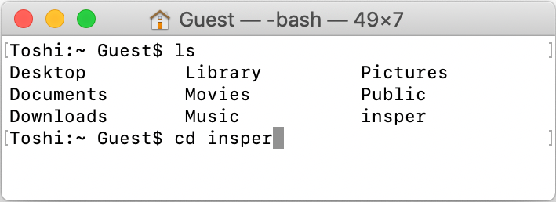cd" width="50%" />
O comando cd não imprime nada no terminal. Esse é o resultado esperado. Vamos visualizar o conteúdo da pasta insper. Para isso, mais uma vez usamos o comando ls:
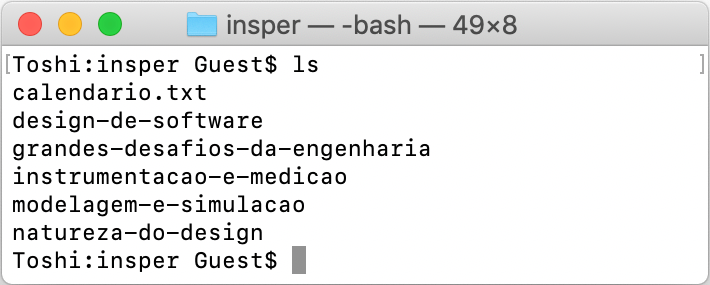ls na pasta insper" width="50%" />
Vemos que essa pasta contém o arquivo calendario.txt e diversas pastas com nomes de disciplinas. Vamos entrar na pasta design-de-software. Mas antes disso, você notou que, na pasta atual, design-de-software é a única pasta que começa com as letras des? Além disso, o terminal acabou de listar as pastas, então em teoria ele "sabe" quais são as pastas e arquivos disponíveis. Não seria bom se eu pudesse escrever só o começo do nome da pasta e o terminal já completasse com o resto? E sim, ele faz isso! Podemos, por exemplo, digitar somente cd des:
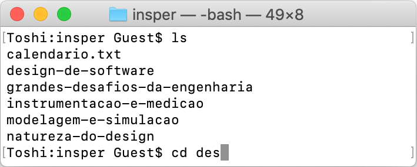cd e o começo do nome da pasta" width="50%" />
Depois disso, ao apertar a tecla tab, o terminal vai completar o comando com o resto do nome:
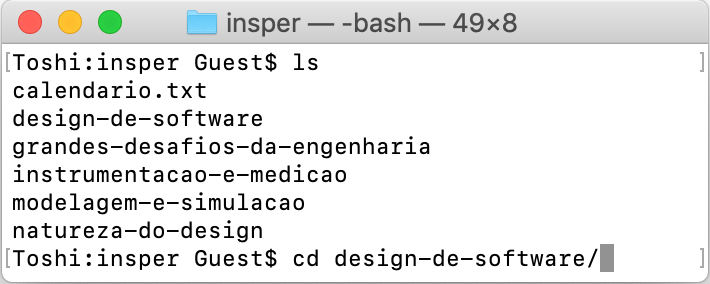
No nosso exemplo, dentro da pasta design-de-software existe uma pasta aulas, que contém outras duas pastas aula01 e aula02, que por sua vez contém 4 arquivos.
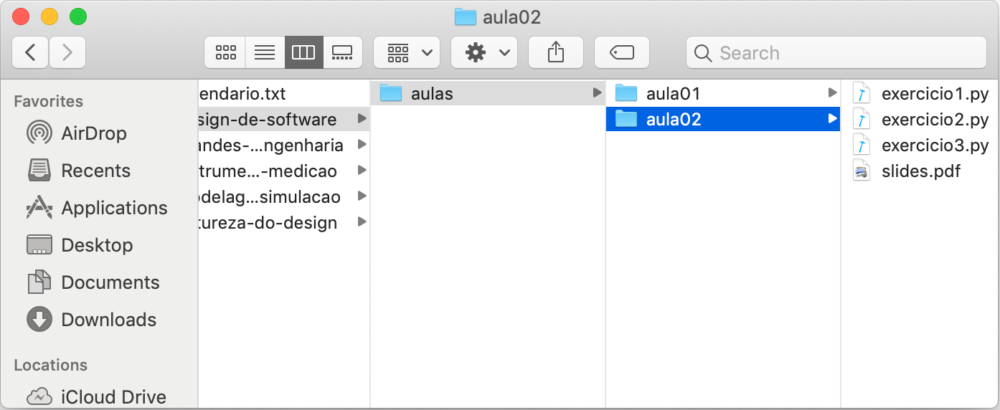design-de-software" width="50%" />
Pode ser um pouco cansativo usar um comando separado para entrar em cada pasta, ainda mais se você já souber o caminho completo. Por isso, também podemos avançar mais de um nível no comando cd, separando os nomes das pastas com uma barra ('/'):
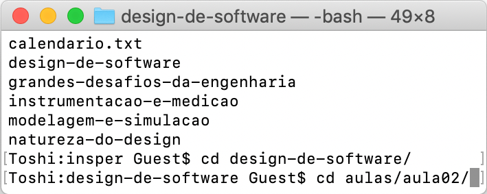cd com um caminho mais longo" width="50%" />
Para verificar que estamos no lugar certo vamos usar, mais uma vez, o comando ls:
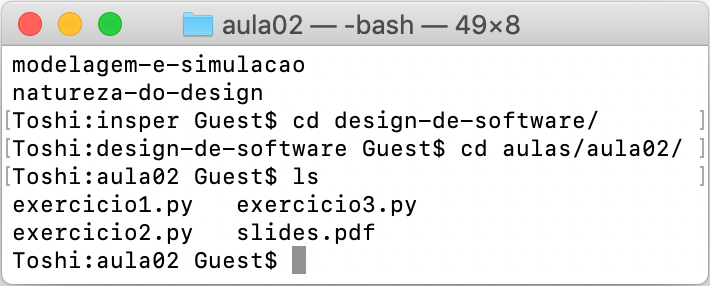ls na pasta insper/design-de-software/aulas/aula02" width="50%" />
Finalmente, podemos também voltar para pastas acima da pasta atual. Para isso usamos o .., que se refere à pasta mãe. Por exemplo:
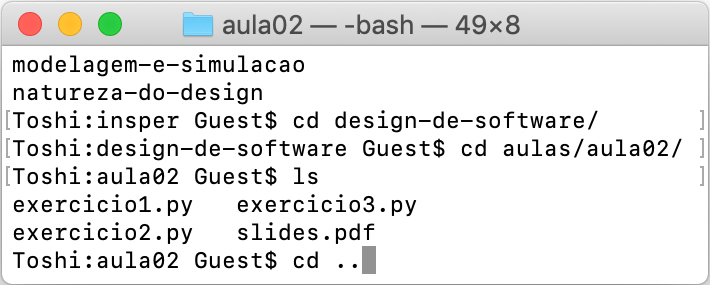cd .. para subir um nível" width="50%" />
Vemos que agora estamos na pasta aulas:
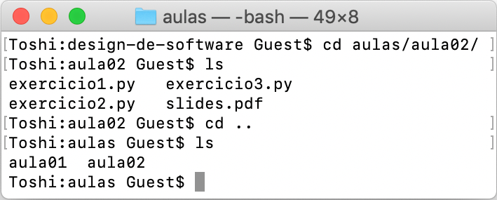ls para ver o conteúdo" width="50%" />
Podemos também compor o .. no caminho de uma pasta. Por exemplo: ../.. são dois níveis acima da pasta atual.
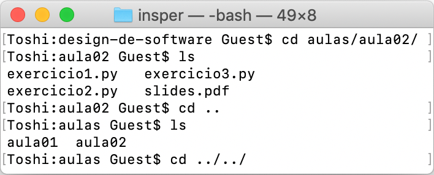.. em um caminho mais complexo" width="50%" />
Assim, depois de executar cd ../.. vemos que estamos novamente na pasta insper:
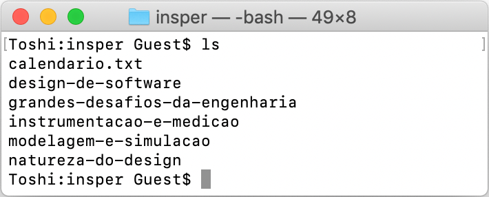insper" width="50%" />